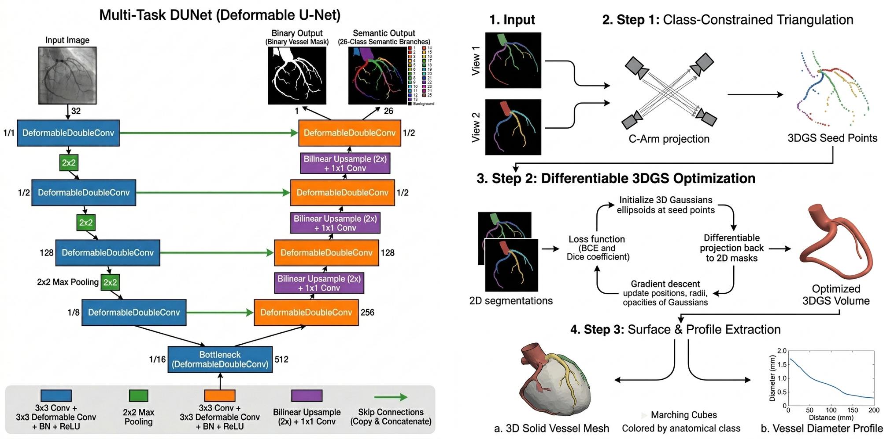
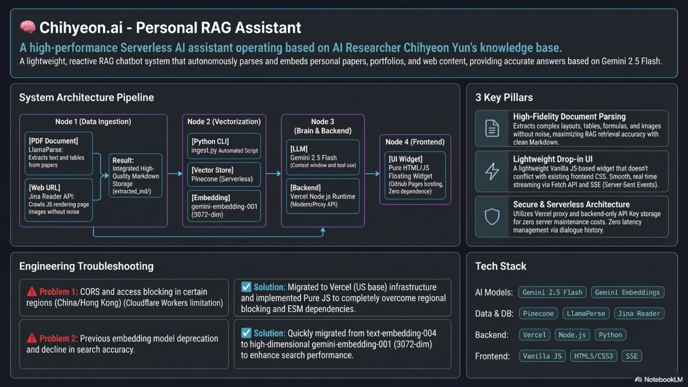
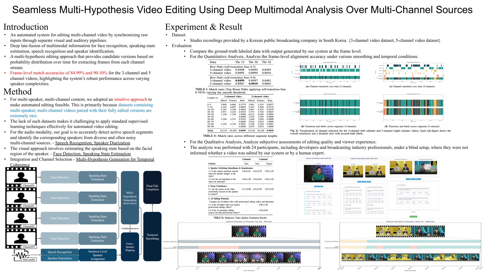
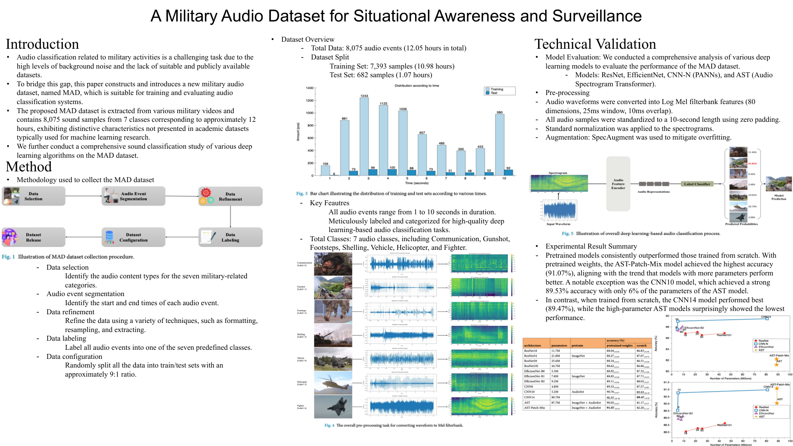
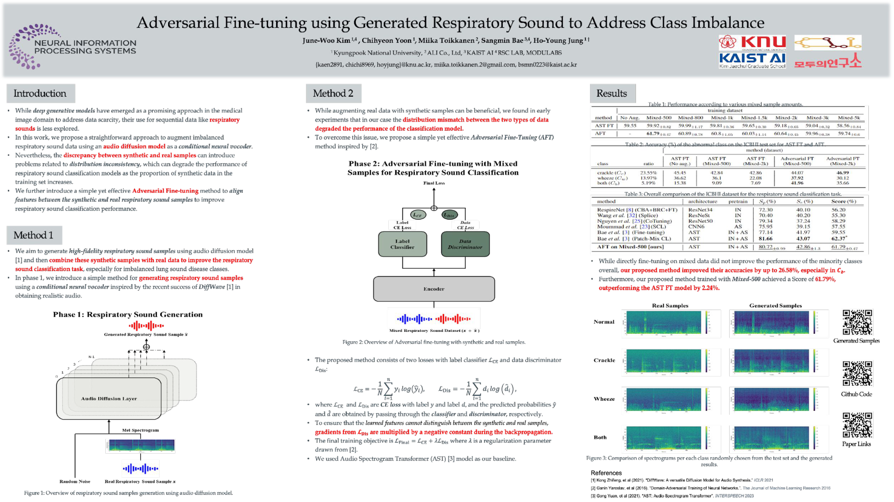
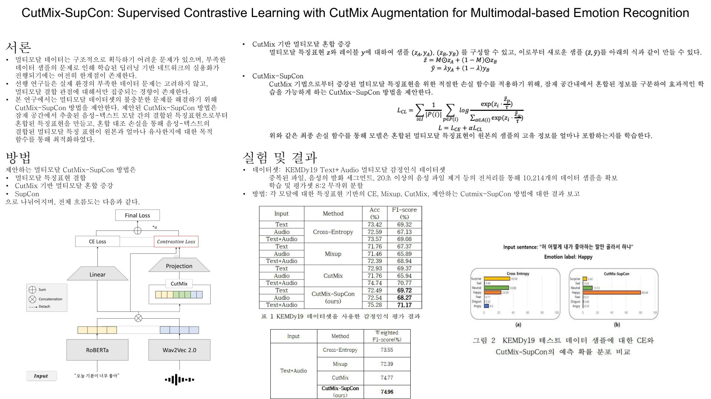

Chihyeon Yun
멀티모달 융합 학습, 3D 공간 컴퓨팅(3DGS / VPS), 의료 AI 및 로봇 행동 모델(VLA) 분야에 특화된 AI 연구원 & 엔지니어 AI Researcher & Engineer specializing in Multimodal Learning, 3D Spatial Computing (3DGS / VPS), Medical AI, and Vision-Language-Action (VLA) Robotics.
- 멀티모달 자동 편집 (석사 연구 & First Author): 발화 인지 Swin Transformer와 Diarization (WhisperX / Pyannote) 오디오-비주얼 신호를 융합 분석하고 빔 서치(Beam Search)로 최적 채널 시퀀스를 추정하는 Late-Fusion 프레임워크 연구 (전문가 대비 90.10% 일치).
- Multimodal Auto-Editing (M.S. & First Author): Designed visual speaking-state (Swin Transformer) and audio diarization (WhisperX / Pyannote) late-fusion frameworks, utilizing Beam Search decoding to estimate optimal camera cuts (achieved 90.10% agreement with experts).
- 공간 AI & 메타버스 (ETRI 실무): 가상-현실 공간 매핑을 위한 시각 기반 위치 추정(VPS) Localization 파이프라인 개발 및 모바일 XR 테스트베드 검증. VLM 적용 시맨틱 분석 기반 제로샷(Zero-shot) 이상행위 실시간 탐지 알고리즘 설계.
- Spatial AI & Metaverse (ETRI R&D): Engineered high-accuracy indoor Visual Positioning Systems (VPS) for cyber-physical space registration, and designed Visual-Language Model (VLM) zero-shot anomaly detection pipelines for real-time video semantics.
- 군사 오디오 감시 (Nature Scientific Data, SCIE): 국방 도메인 감시 체계를 위한 최초의 전장 위험음 데이터셋(MAD, 8,075 샘플) 구축 및 80차원 로그 멜 필터뱅크 피쳐 파이프라인 설계, 트랜스포머(AST-Patch-Mix) 오디오 분류 벤치마크 수행 (정확도 91.07%).
- Acoustic Surveillance (Scientific Data, Nature SCIE): Built the first open Military Audio Dataset (MAD, 8,075 samples) for situational awareness, designed log-Mel filterbank feature extractions, and benchmarked Audio Spectrogram Transformers (AST, 91.07% accuracy).
- 의료 AI & 디퓨전 생성 (NeurIPS 워크숍): 호흡음 데이터 불균형 해결을 위한 DiffWave(conditional neural vocoder) 생성 모델 설계 및 잠재 공간 도메인 정렬을 위한 적대적 미세조정(AFT) 기법 제안 (소수 질환 분류 성능 최대 26.58% 개선).
- Medical AI & Audio Diffusion (NeurIPS Workshop): Addressed diagnostic data scarcity via conditional audio diffusion (DiffWave) synthesis and designed Adversarial Fine-Tuning (AFT) models to align domain features (improving minority class classification by up to 26.58%).
- 3D 복원 & VLA 로보틱스 (PoC): 2D MT-DUNet(DCNv2)과 Beer-Lambert 3DGS를 결합한 sparse-view X-ray 관상동맥 3D 복원 알고리즘 최적화(L4 GPU 메모리 8배 절감). SmolVLA 기반 Unity ROS 로봇 제어(Pick & Place) 파이프라인 구축.
- 3D Reconstruction & VLA Robotics (PoC): Coupled 2D MT-DUNet (DCNv2) and Beer-Lambert radiative 3DGS for coronary artery 3D reconstruction under extreme memory optimization, and integrated SmolVLA control in Unity ROS simulation environments.
- 멀티모달 감정 인식 (KCC 우수 & ETRI 경진대회): 텍스트(KLUE-RoBERTa) 및 오디오(wav2vec 2.0) 임베딩의 특징 공간(Latent Space)상 CutMix 증강 및 지도 대조 학습(SupCon) 유사도 정렬 파이프라인 설계 (F1-score 71.17% 달성, 장려상 수상).
- Multimodal Emotion Recognition (KCC & ETRI Award): Integrated text (KLUE-RoBERTa) and speech (wav2vec 2.0) encoders using Latent CutMix augmentation and Supervised Contrastive Learning (SupCon) for cosine similarity alignment (F1-score 71.17%).
💼 연구 및 경력 타임라인 💼 Research & Career Timeline
- 물리-가상 공간 좌표 연동을 위한 고정밀 시각 기반 위치 추정(VPS) 알고리즘 개발.
- Developed a high-accuracy Visual Positioning System (VPS) for cyber-physical space registration.
- 메타버스 플랫폼 내 사용자 이상행위 제로샷 감지를 위한 VLM 기반 이상행위 분류기 설계.
- Designed VLM-based zero-shot anomaly detection pipelines for metaverse platform participants.
- 정부 R&D 국책 과제(연구 보고서 및 기술 요구사항 명세서) 공동 관리 및 학술 세미나 주관.
- Managed joint research projects and authored technical specifications (Specs) for government-funded national R&D programs.
- 다채널 영상의 화자 분할 및 발화 상태 감지 기반 실시간 자동 카메라 편집 프레임워크(석사 학위 논문) 연구.
- Developed a late-fusion and beam-search decoding framework for automated multi-camera video editing (Master's Thesis).
- 군사 오디오 데이터셋 (SCIE): 상황 인지 음향 분류 벤치마킹을 위한 군사 오디오 데이터셋(MAD) 구축 및 AST/CNN 벤치마킹 수행 (Scientific Data / Nature Portfolio, 2024).
- Military Audio Dataset (SCIE): Constructed the MAD dataset for surveillance and benchmarked AST / CNN audio classification models (Scientific Data / Nature Portfolio, 2024).
- 특징 공간상에서의 CutMix 증강 및 지도 대조 학습(SupCon)을 결합한 한국어 감정 분류기 개발 (KCC 2023 우수 성과 / ETRI 경진대회 장려상).
- Designed CutMix-SupCon text-speech emotion classification architectures (KCC / ETRI Competition Awarded).
- DiffWave 디퓨전 모델 기반 가상 호흡음 합성 및 도메인 정렬 적대적 미세조정(AFT) 아키텍처 개발 (NeurIPS DGM4H Workshop).
- Built conditional neural vocoders (DiffWave) and domain-adversarial fine-tuning (AFT) for respiratory diagnostics (NeurIPS Workshop).
🛠️ 핵심 기술 스택 & 역량 🛠️ Core Tech Stack & Skills
주요 프로젝트 Featured Projects
LCA CAG 3DGS Reconstruction & Dashboard Live PoC
2D Multi-Task Deformable UNet(MT-DUNet)과 Beer-Lambert 법칙 기반 3D Gaussian Splatting(3DGS)을 융합하여 희소한 2D C-arm X선 혈관 조영 영상으로부터 3D 관상동맥의 중심선, 반경 프로파일 및 형상을 복원하는 PoC 시스템.
A 3D volumetric reconstruction PoC that combines a 2D Multi-Task Deformable UNet (MT-DUNet) and Beer-Lambert radiative 3D Gaussian Splatting (3DGS) to recover 3D coronary artery structure, radius profile, and volume from sparse 2D C-arm X-ray angiograms.
- Multi-Task Deformable UNet: DCNv2를 결합하여 굴곡진 혈관 형상에 대응하고, 바이너리 혈관 마스크와 25개 해부학적 분지 라벨을 동시에 예측.
- Multi-Task Deformable UNet: Integrates deformable convolutions (DCNv2) to adapt to complex vessel tortuosity, simultaneously predicting binary vessel masks and 25 anatomical branch labels.
- 클래스 제한 삼각측량: 다방향 뷰 매칭 시 동일 분지 라벨만 엄격히 투영시켜 허상(ghost-point)을 제거하고 4.5배 조밀한 3D 중심점 시드 생성.
- Class-Constrained Triangulation: Prevents ghost-point artifacts in epipolar matching by strictly pairing identical anatomical branch labels across views, yielding a 4.5x denser 3D centerline seed.
- Beer-Lambert 3DGS: X선의 투과 특성을 수학적으로 모델링하여 시선 밀도를 적분하고 혈관 반경($r$) 및 불투명도($\alpha$)를 가중 연산 최적화.
- Beer-Lambert Radiative 3DGS: Solves the transparency occlusion problem of X-ray projection by analytically integrating density along rays, optimizing vessel radius ($r$) and opacity ($\alpha$).
- 연산 효율화: L4 GPU 상에서 데이터 포인트 다운샘플링과 다중 해상도 렌더링을 적용하여 GPU 메모리 8배 절감(2.5 GiB 동작).
- High Efficiency: Achieved 8x GPU memory saving (2.5 GiB execution) on an L4 GPU via downsampling and multi-resolution rendering.

Chihyeon.ai Personal RAG Assistant AI Agent
치현님의 학술 논문, 경력 상세 기술서 및 프로젝트 설명서 지식베이스를 연동하여, 방문자 질문에 사실 기반의 실시간 스트리밍 답변을 제공하는 고품질 AI 비서 챗봇.
A sophisticated personal RAG system that serves as an interactive AI secretary, providing high-fidelity, grounded answers based on my academic research papers, CV, and project documentation.
- 고품질 파싱: LlamaParse 및 Jina Reader API를 결합하여 학술 논문의 복잡한 표, 수식 기호, 그리고 동적 렌더링 웹 내용을 완벽히 추출.
- High-Fidelity Parsing: Leverages LlamaParse and Jina Reader API to flawlessly extract complex academic layouts, mathematical formulas, and JS-rendered web content.
- 글로벌 서버리스 아키텍처: Vercel Functions Proxy 서버를 경유하여 백엔드 API 키 노출을 완벽히 방지하고 접속 제한 문제를 해결.
- Secure & Global Architecture: Uses a Vercel-based proxy to secure API credentials and bypass regional restrictions, ensuring a seamless experience for visitors worldwide.
- 고속 임베딩 질의: 3072차원의 Pinecone 벡터 데이터베이스 공간에 저장하고 Gemini 2.5 Flash를 사용하여 지연 없는 답변 전송.
- State-of-the-Art Intelligence: Powered by Gemini 2.5 Flash for near-instant, streaming responses grounded in a high-dimensional (3072-dim) Pinecone vector space.

Unity Pick and Place Integration with SmolVLA
다중 모달리티 행동 제어 모델인 SmolVLA를 활용하여 로봇 팔의 '물건 집기 및 놓기 (Pick and Place)' 동작을 Unity 3D 가상 물리 엔진상에서 시뮬레이션 및 제어 연동한 개발 건.
An end-to-end integration of the SmolVLA (Vision-Language-Action) model within a Unity simulation environment to perform robotic 'Pick and Place' tasks.
- 바이브 코딩(Vibe Coding) 방법론: 인공지능 어시스턴트(LLM)와 적극 협업하여 복잡한 네트워크 통신 및 시스템 연동 보일러플레이트 코드를 신속히 빌드하고, 핵심인 로봇 의사결정 모델 구조 설계에 집중.
- Vibe Coding Methodology: Actively embraced the Vibe Coding paradigm by leveraging LLMs to handle complex boilerplate and system interfacing, allowing me to focus on high-level architecture and the reasoning logic of the VLA model.
- 통신 파이프라인 연계: ROS-Unity Integration 기술을 응용하여 가상 공간의 이미지 피드를 딥러닝 추론 서버로 전달하고, 출력된 Action 모션을 가상 관절 토크로 피드백하는 전이 파이프라인 구축.
- Communication Pipeline: Successfully established the communication pipeline between Unity and a ROS-based SmolVLA inference node.

논문 및 학술 발표 실적 Publications
"Seamless Multi-Hypothesis Video Editing Using Deep Multimodal Analysis Over Multi-Channel Sources"
다채널 카메라 환경에서 취합된 시각(얼굴/발화 행동) 및 청각(오디오 스트림) 신호를 융합 분석하고 전문가의 컷 전환 문맥을 학습하여 자연스러운 편집 비디오를 자동 생성하는 엔드투엔드 시스템.
A system that automatically generates professional-level video edits by analyzing visual and audio data collected from multi-camera environments.
사용 기술: Tech Stack: Speaker State Estimation, Multi-Hypothesis Generation, Beam Search Optimization.

"A Military Audio Dataset for Situational Awareness and Surveillance"
전쟁 및 경비 보안 환경의 특수성을 고려하여 총성, 포격, 교신 등 7대 핵심 군사 위험 소리를 수집하고 AST(Audio Spectrogram Transformer) 모델을 벤치마크 튜닝하여 91.07% 정확도를 확보한 공개 데이터셋.
Constructed a high-quality audio dataset for situational awareness in specialized environments (military/surveillance) and contributed to domain-specific research.

"Adversarial Fine-tuning using Generated Respiratory Sound to Address Class Imbalance"
의료 인공지능 진단의 클래스 불균형을 해결하기 위해 DiffWave 생성 모델을 설계하고, 원본과 생성 데이터 간의 분포 차이를 보완하는 적대적 미세조정(AFT) 기법을 제안하여 소수 질환 분류 정확도를 최대 26.58% 향상한 연구.
Proposed an Adversarial Fine-tuning technique to overcome data imbalance in the Medical AI domain by utilizing data generated through an Audio Diffusion Neural Vocoder.

"CutMix-SupCon: Supervised Contrastive Learning with CutMix Augmentation for Multimodal-based Emotion Recognition"
한국어 음성(wav2vec 2.0) 및 텍스트(KLUE-RoBERTa) 인코더 임베딩 특징을 특징 공간상에서 결합(Latent CutMix)하고 지도 대조 학습(SupCon)을 통해 정렬하여 멀티모달 감정 분류 성능을 향상한 연구.
Enhanced the efficiency of multimodal emotion recognition by combining Feature-level CutMix augmentation with Supervised Contrastive Learning (SupCon) to address data imbalance.
